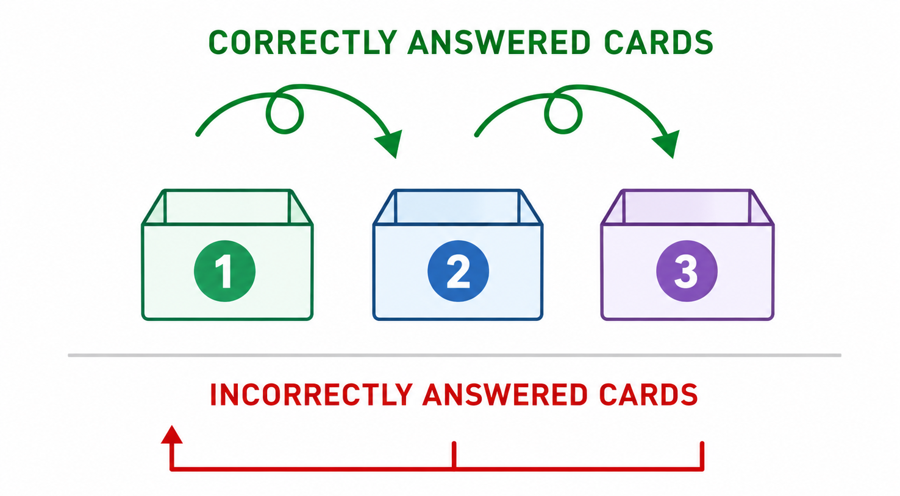

How Spaced Repetition Works
Why this method became one of the most effective ways to remember vocabulary for the long term.
What Is Spaced Repetition?
Spaced repetition is a learning method based on one simple idea: review information before you forget it.
Instead of repeating everything every day, you review words and phrases at gradually increasing intervals. A new word might appear again after a few minutes or hours, then the next day, several days later, and eventually weeks or even months later.
Each successful recall pushes the next review further away. If you forget, the interval becomes shorter so the memory can strengthen again.
The result is simple: better memory with less unnecessary repetition.
A Short History
The roots of spaced repetition go back to the 19th century.
In the 1880s, German psychologist Hermann Ebbinghaus studied memory and forgetting by performing experiments on himself. His work led to the famous forgetting curve — the observation that we forget newly learned information surprisingly quickly if we do not revisit it.

Later, researchers explored how timing affects learning, and in the 1970s the German journalist Sebastian Leitner introduced a practical flashcard box system that adjusted reviews based on performance.

With computers, these ideas became even more powerful. Modern learning systems can calculate review timing automatically and adapt to each learner's memory.
How It Works
Spaced repetition follows a simple cycle:
- You learn a new word or phrase.
- You review it shortly after the first exposure.
- If you remember it, the next review moves further away.
- If you forget, the card returns sooner.
- Over time, easy memories need less attention while difficult ones receive more.
This adaptive rhythm helps balance two goals: keeping memories strong while avoiding unnecessary study.
Why Is It So Popular?
Spaced repetition became popular because it solves a common problem: forgetting what you studied.
It saves time
You review fewer cards overall, but at more effective moments.
It supports long-term memory
Words stay with you for months or years instead of disappearing after a short study session.
Progress feels visible
You can see card levels, successful recalls, and upcoming reviews.
It scales easily
The same method works whether you are learning 20 words or 20,000 — vocabulary, exams, facts, or professional knowledge.
How Flip Uses Spaced Repetition
Flip schedules reviews so that each word appears at the right moment — not too early and not too late.
Words you know gradually move to wider intervals, while difficult ones return sooner. This keeps daily sessions short and focused while steadily building long-term vocabulary.